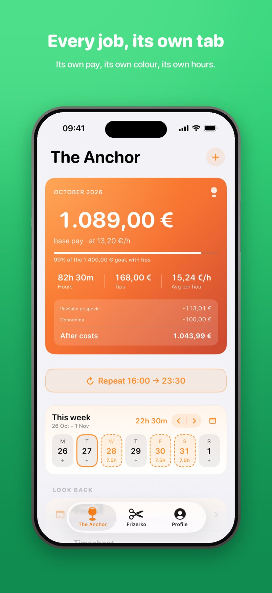
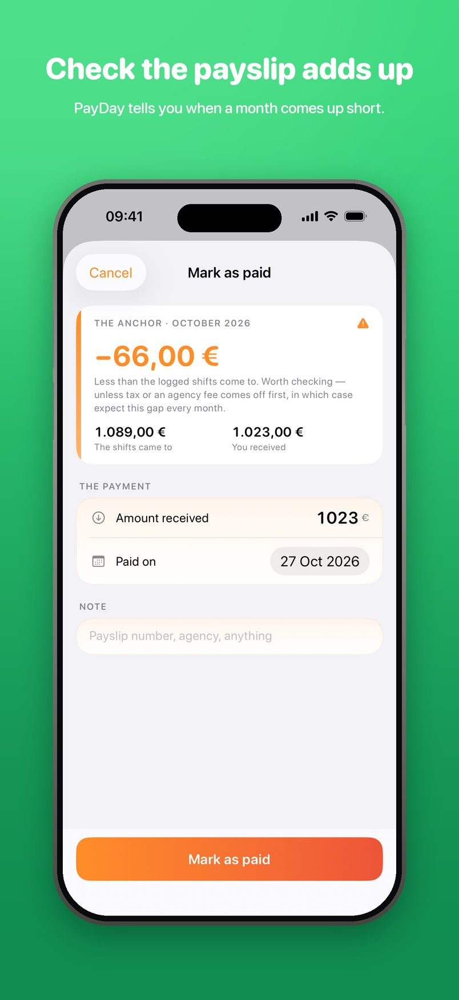

PayDay
A shift and pay tracker for people who work more than one job. Log your shifts and tips, and always know what this month will pay.
Know your pay before payday
Most hour trackers assume one employer and a fixed salary. PayDay assumes the opposite: a bar on weekends, a studio on Tuesdays, deliveries when they come up, each with its own rate, hours and tips. It answers three questions. What have I worked this month? What will the month pay me? And did the payslip actually match?
Not everyone is paid by the hour. Hairdressers, barbers, nail technicians, masseurs, tutors and driving instructors can set a job to pay per appointment, keep a price list instead of an hourly rate, and get a timesheet that lists each day with its appointments.
Screenshots





Features
- A tab for every job, with its own rate, colour and icon
- Paid per appointment? Keep a price list and log a client with one tap
- Ready-made price lists for hairdressers, barbers, nails, massage and more
- Days off: holiday, sick or other, paid or unpaid
- Monthly costs like tax, so the card shows what the month really leaves you
- Log a shift in seconds, or repeat your last one with a tap
- Two sets of usual times per job, one tap each
- Plan shifts ahead from your schedule, with a reminder to confirm them
- Warns you when two shifts overlap
- Shifts that run past midnight
- Tips, only for the jobs that have them
- Projected pay for the month: worked, planned and estimated, kept apart
- Choose the figures on each card: hold it down and pick from eight
- Monthly goals in hours or money, and a yearly total with an optional limit
- A dot on the calendar for every day with a note
- Check your payslip: enter what was paid and see any difference
- Rate rise? Choose whether it applies to shifts already logged
- Timesheets for your employer as PDF, and all your data as CSV
- Compare hours and pay across your jobs, month by month
- In Slovenian, English, German and Italian, switchable in the app
- Any currency, light and dark themes
- Sync across your devices with iCloud, or keep it all on the phone
How it works
A short tour shows you around, then you add your first job and choose whether it pays by the hour or per appointment. Log each shift as you work it, or enter your schedule in advance as planned shifts and PayDay will ask after each one whether you worked it. The month projection keeps what you have worked, what is planned and what is estimated apart, and fills the remaining days at your average, leaving out the days you booked off. When the money arrives, enter what was paid and PayDay tells you whether it matched what your shifts came to.
Requirements
- iPhone with iOS 17 or later
- Free to download
- iCloud, only if you want sync between devices
- No account and no sign-up
Ratings & reviews
-
Great app for tracking working hours
Great app! Very easy to use and well organized. Tracking my working hours is very simple and convenient. I definitely recommend it!!